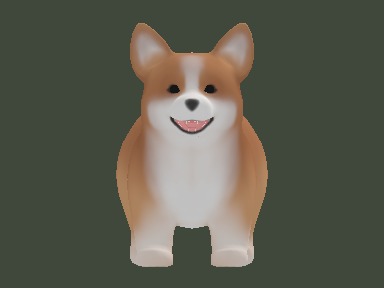
6犬種に会う
前作と同じ犬たち
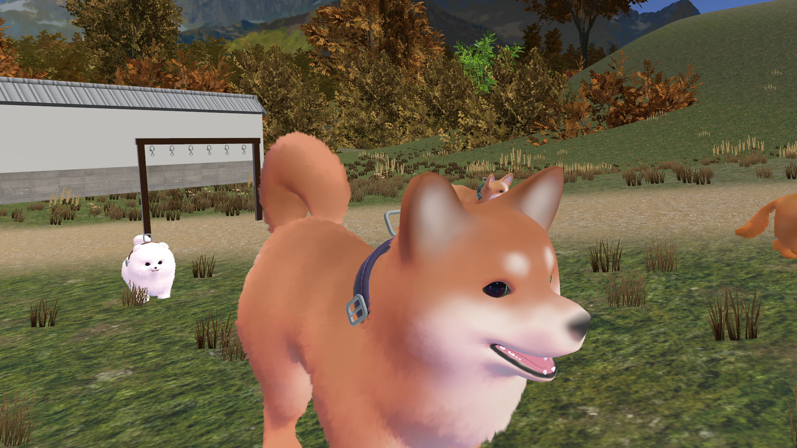
古民家の裏山
古民家ドッグランの6匹と、秋の山へ。
犬とお散歩
気に入った犬と、
山道や川沿いへ出かけられます。
片手に3匹、両手で6匹まで。
行き先は手元メニューで選べます。
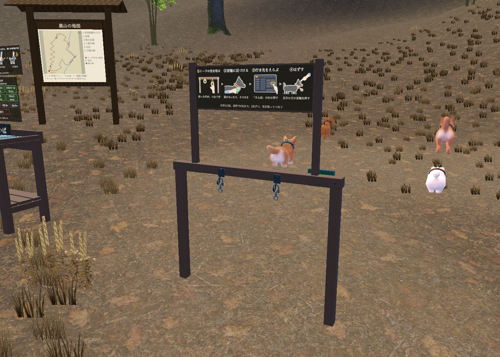
フリスビー・おもちゃ
フリスビーを投げると、
犬が追いかけてキャッチ。
くわえて持ってきます。
ボールなどのおもちゃでも、
遊べます。
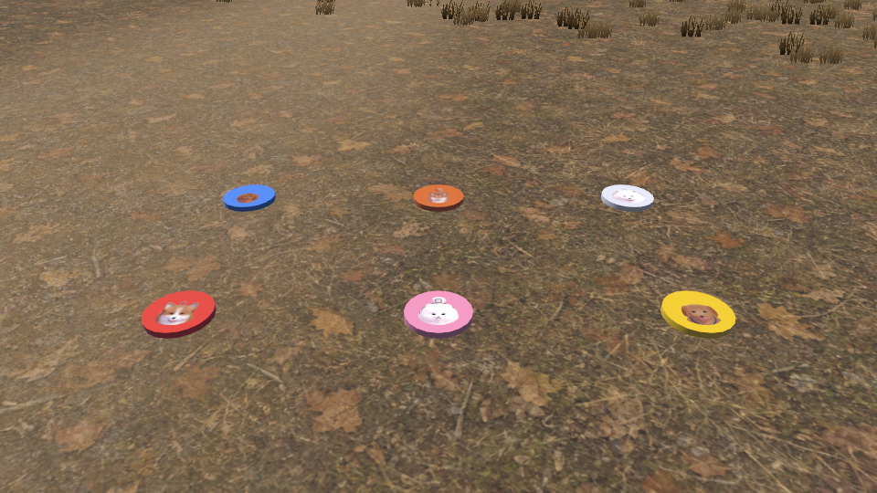
川遊び
散歩の途中で、犬と水遊び。
小さな犬は泳ぎ、
大きな犬は浅瀬を歩きます。
川沿いの道と小さな橋を通って、
入口へ戻れる周回コースです。
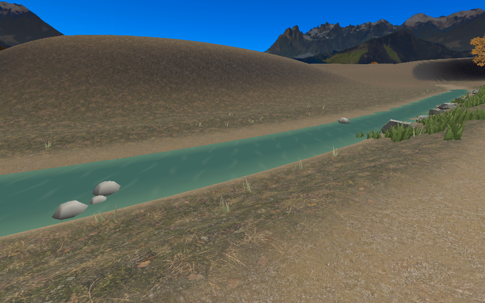
散歩帰りのお手入れ
泡をつけて、スポンジで洗い、
シャワーですすげます。
仕上げはタオルで。
入口と道中に洗い場があります。
犬を呼び、台の高さを調整できます。
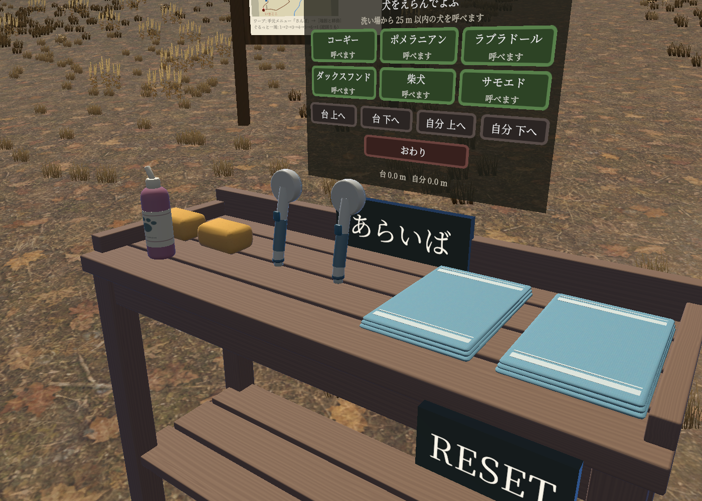
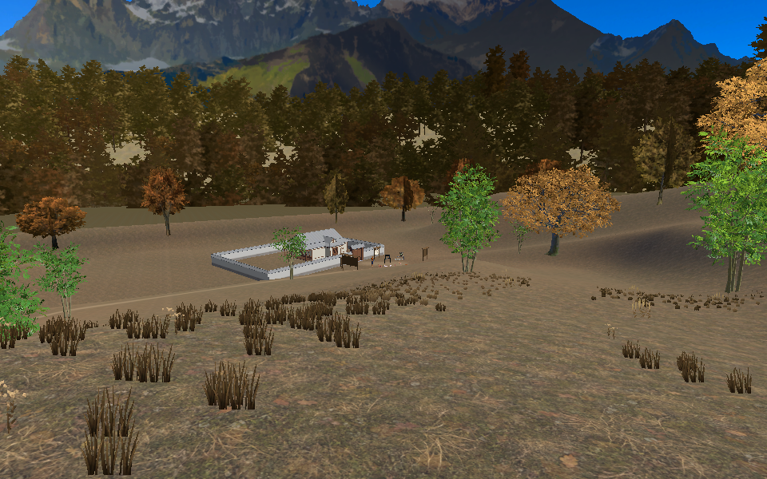
景色と休憩
登ってきた道の先に、
犬たちと出発した古民家が見えます。
ベンチのそばで休んだり、
犬を呼んで撫でたり。
自分のペースで過ごせます。
古民家の室内へは、
入口の案内から前作へ遊びに行けます。
散歩の思い出
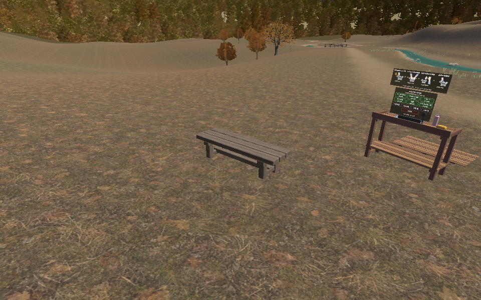
リードでつないで歩くと自動撮影。
撫でたり遊んだりした場面も残ります。
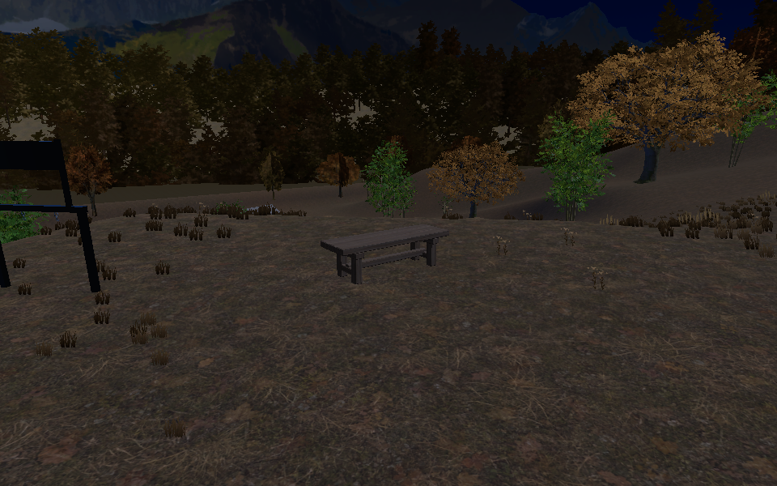
手元メニューや、入口の写真ボードで。
最大24枚を、新しい順に見られます。
写真は自分だけに表示され、退出すると消えます。掲載画像は散歩コースの風景です。

前作と同じ犬たち
片手3匹・両手6匹まで
追いかけてキャッチ
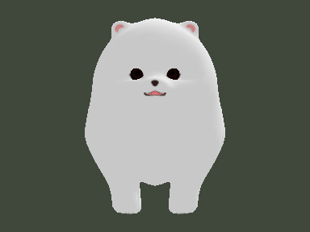
ボールなどを取ってくる
犬と川の浅瀬へ
泡・すすぎ・タオル
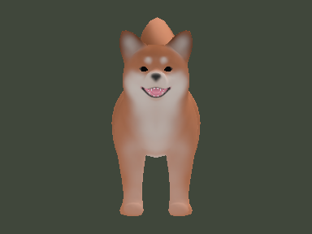
そばで触れ合う
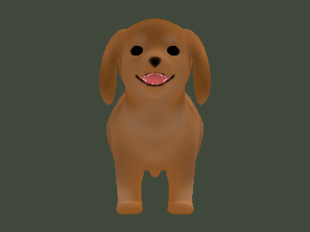
おやつや着せ替え
散歩と触れ合いを撮影
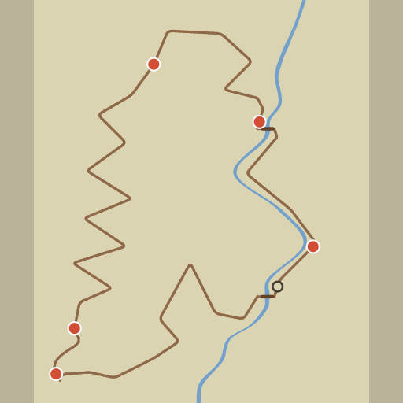
行き先を選んでワープ
山から古民家を眺める
夜の景色も楽しめる
一部の飾りなどは、Pointでの解放や商品の購入が必要です。